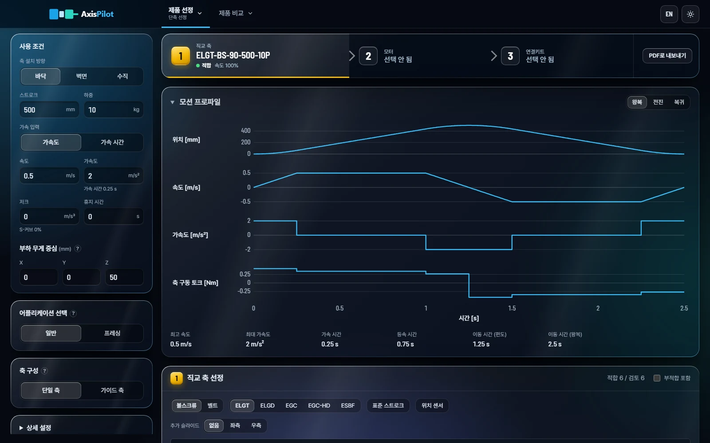
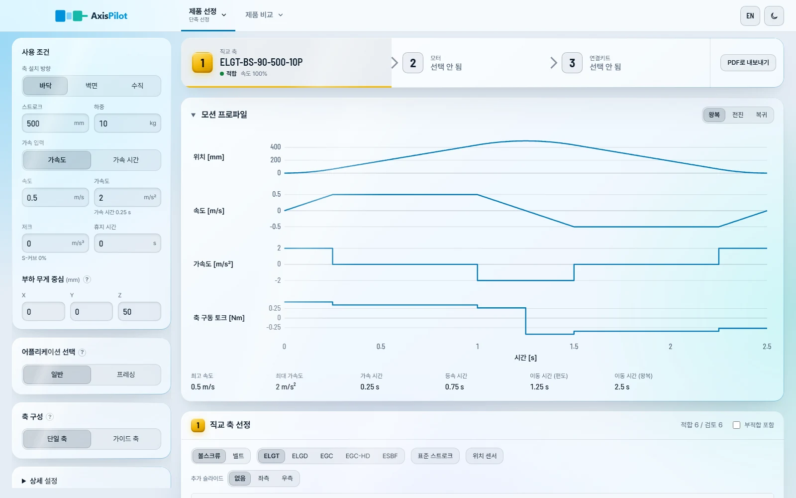

AxisPilot 다크 / 라이트 모드
같은 단축 선정 화면을 1600×1000에서 캡처했습니다. 이미지 위를 좌우로 끌면 왼쪽이 다크 모드, 오른쪽이 라이트 모드입니다. 앱에서는 언어 버튼 옆의 해·달 버튼으로 바꿉니다. 앱 열기
Drag across the image: dark theme on the left, light on the right. In the app, the sun / moon button switches them.


다크 모드 · Dark라이트 모드 · Light키보드로는 비교 영역에 포커스한 뒤 ← → 키로 움직입니다. · Keyboard: focus the image, then ← →.